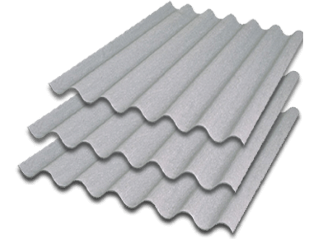
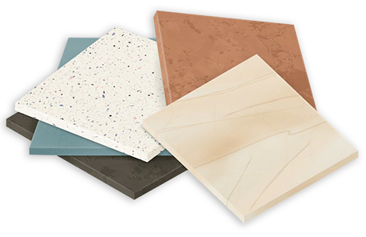

BULIGON MATERIAIS DE CONSTRUÇÃO
PRODUTOS

Saco de cimento CP II
O saco de cimento CP II é utilizadopara diversas aplicações na construção
civil, como concreto armado, argamassas
e contrapisos. Ele oferece boa resistência
e versatilidade, sendo ideal para estruturas robustas e duráveis.
Preço: 2 merrecas

na cobertura de casas e outras edificações.
É tipicamente feita em cerâmica, mas pode ser
produzida em uma grande variedade de materiais.
Telha
É um elemento na construção civil usadona cobertura de casas e outras edificações.
É tipicamente feita em cerâmica, mas pode ser
produzida em uma grande variedade de materiais.
Preço: 2 merrecas

dentro de casas apartamentos escritorios e mais,
possui uma grande variedade de cores.
Azulejos
Azulejos utilizados para decoraçãodentro de casas apartamentos escritorios e mais,
possui uma grande variedade de cores.
Preço: 2 merrecas

Fita Isolante
Utilizada para manutenção de eletrodomésticos e mais
boa durabilidade e um otimo isolante
Preço: 2 merrecas